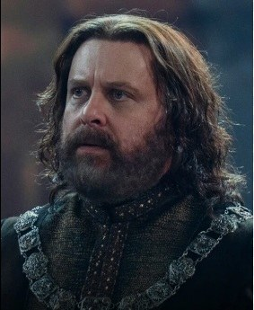
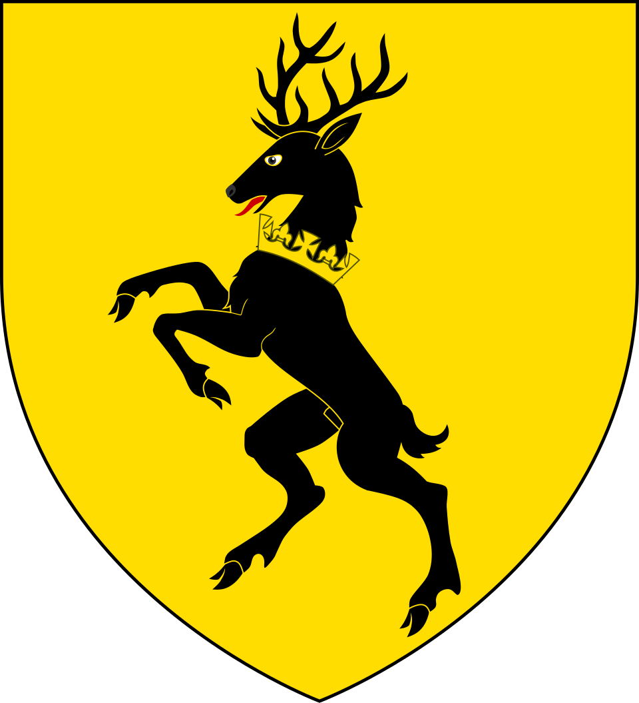

Corte e aliados
Borros Baratheon
Senhor de Ponta Tempestade. Avalia as propostas dos dois lados a partir dos interesses de sua casa.
Conteúdo até a temporada 1, episódio 10.
Ver Mapa de Conexões →HISTÓRICO DO PERSONAGEM
Temporada 1
Acompanhe os acontecimentos registrados até o episódio escolhido.
Episódio 10 — The Black Queen
Senhor de Ponta Tempestade. Avalia as propostas dos dois lados a partir dos interesses de sua casa.
Personagens relacionados
- Aemond TargaryenNegociação de aliança
- Lucerys VelaryonRecebe o emissário
- Boremund BaratheonPai / filho